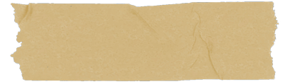
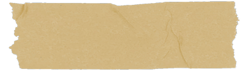
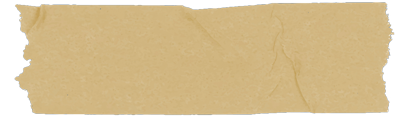

Je ne sais pas s'il sera plus simple de s'y retrouver comme ça, mais ici, je vais essayé de vous mettre les vidéos des lettres et pourquoi pas, de temps en temps, des petites photos. (Comme ça, si un jour j'oublie de vous écrire le lien, vous pourrez venir par ici)
Ouvrir le carnet
